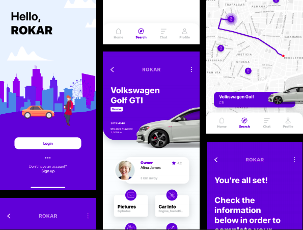

Projects
Here is a list of projects that I have worked on or am working on.

JavaScript 30
Project LinkOriginal Website Link
30 Day Vanilla JavaScript coding challenge to build 30 different things
in 30 days with 30 tutorials. No frameworks, no compilers, no libraries,
and no boilerplate used.
Keywords: JavaScript, HTML, CSS
Pump Prediction
Project Link
Data challenge to predict which pumps are functional, which need some repairs,
and which don't work at all, to assist in the production and distribution of
clean water to communities across Tanzania. Finished in the top 15th percentile
across the United States, with an accuracy of 78.61%.
Keywords: R, RStudio, Random Forest, Machine Learning

ROKAR
Project Link
A peer-to-peer (P2P) car sharing business model. Intended to solve the
inefficiency of the current car rental market and unused car resources.
Keywords: App Design, UX/UI Design, Adobe XD
[ WORKING ] Destroy Mac
A web-browser game that mainly targets Macalester (Mac) students
to destroy all the iMac computers on campus (pun intended).
Keywords: JavaScript, HTML, Phaser, Game Development
Etch-A-Sketch
Project Link
A browser version of something between a sketchboard and an Etch-A-Sketch.
Adds color to each square and gets darker every time the mouse hovers.
Keywords: JavaScript, HTML, CSS
Rock Paper Scissors
Project Link
A browser version of everyone's favorite childhood game, Rock Paper Scissors.
You can play with a computer just in case you have no one else to play with.
Keywords: JavaScript, HTML, CSS
Google Homepage
Project Link
A recreation of the famous Google homepage, and my first project with HTML on web development!
Keywords: HTML, CSS